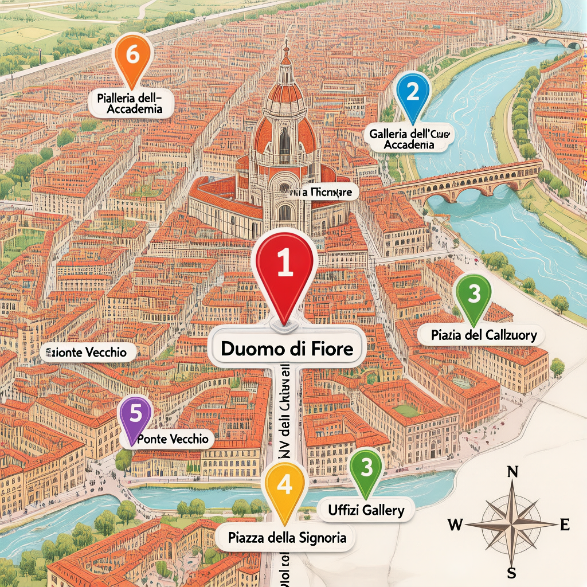
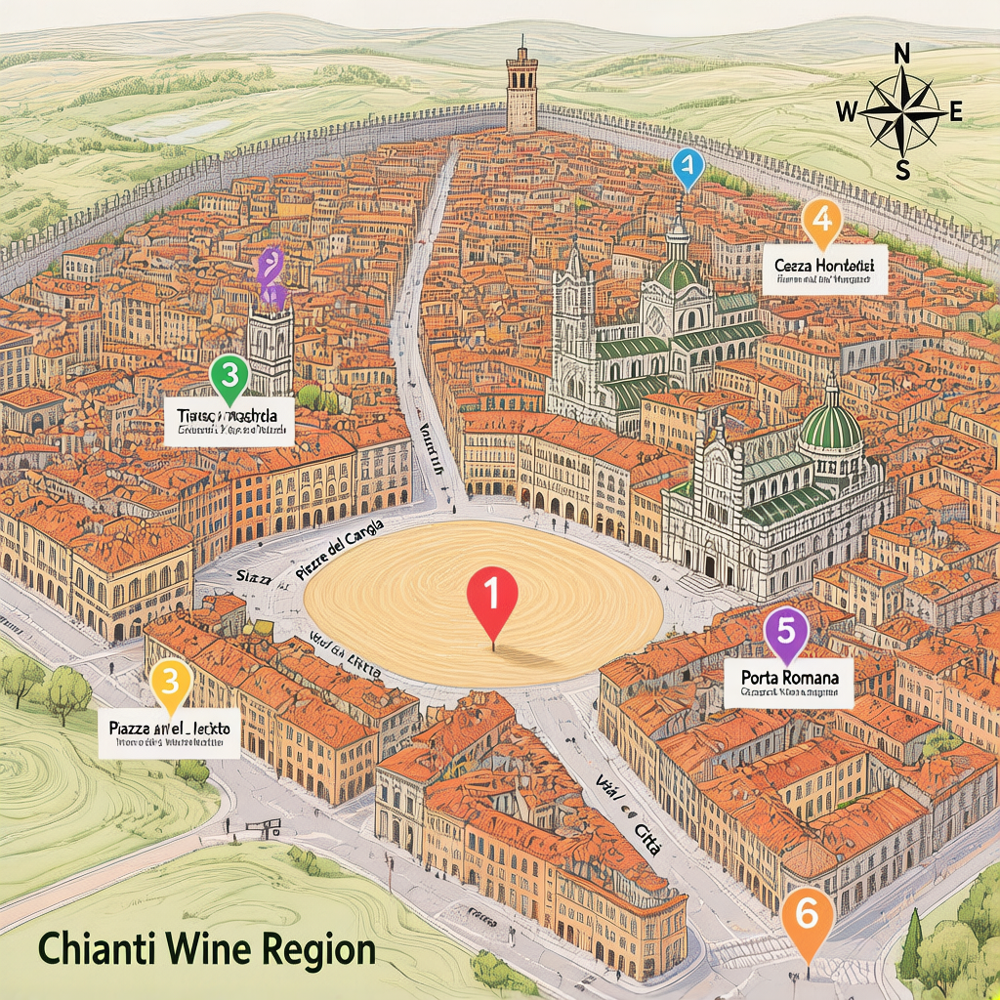
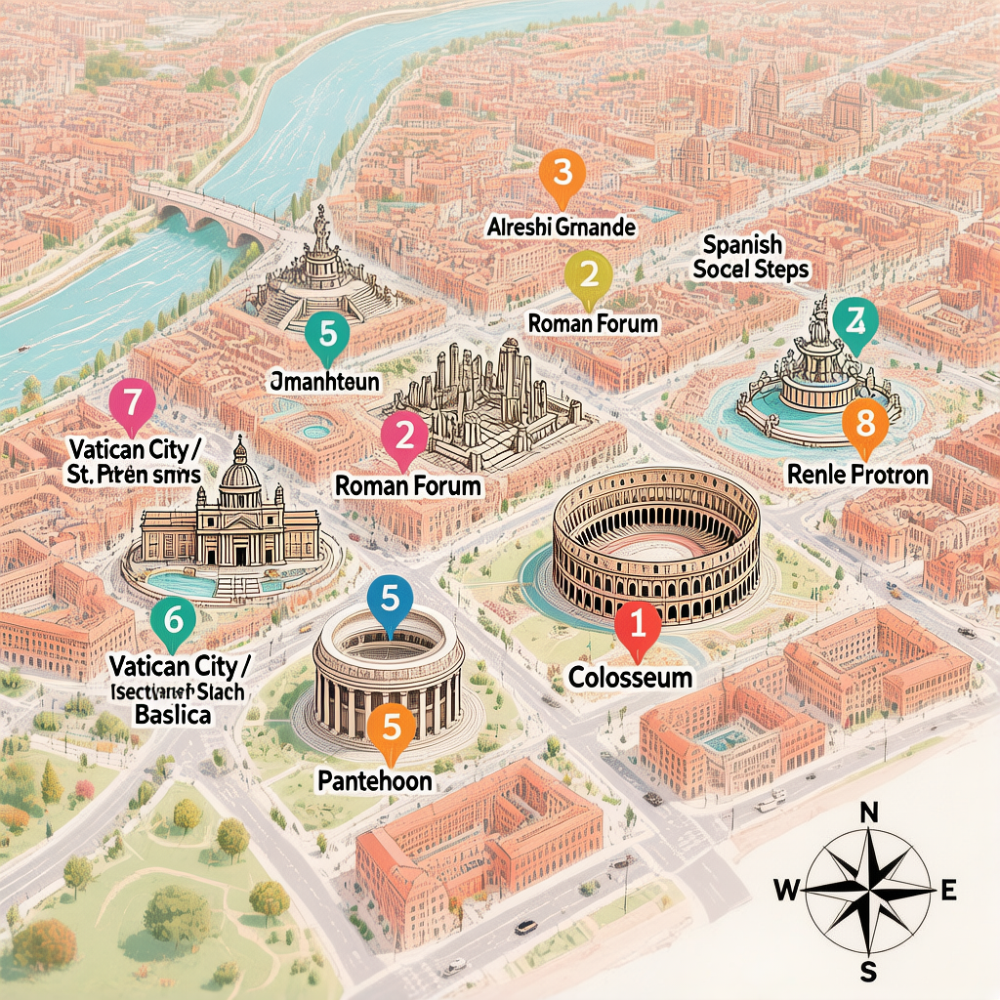

📌 本次修订要点（v8.2 → v8.3）
| 类别 | 修订内容 |
|---|
| 🔧 数据一致性清理 | 删除过时邮件附录（已发送）、更新Day5提醒为已订状态、修正酒店备忘状态 |
| ✅ 佛罗伦萨Airbnb已订 | Lungarno della Zecca Vecchia 42，5月2-4日，2晚，¥3,633.74，房东Maryam，+39 350 097 0312 |
| ✅ Buccellati/Beccacece询货邮件已发 | 两款（Margherita/Gardenia）均已发送，等待回复 |
| ✅ 斗兽场+万神殿已订 | 5月6日，14:00/17:00-18:00，€140+€10 |
🚨 紧急待办（出发前必须完成）
| 优先级 | 事项 | 链接/备注 |
|---|
| ✅ 已订 | 斗兽场门票（5月6日 14:00） | Tiqets · 订单2085796464 · €140 |
| ✅ 已订 | 万神殿门票（5月6日 17:00-18:00） | Italy Moments · €10 |
| ✅ 已发（待回复） | Buccellati 罗马直营店询货邮件 | roma.condotti@buccellati.com |
| ✅ 已发（待回复） | Beccacece Gioielli 询货邮件 | info@beccacecegioielli.it |
| 🟡 尽快确认 | 租车已含附加驾驶员（Sean，海牙驾照） | Sixt 客服 |
| ✅ 已订 | 佛罗伦萨Airbnb（5月2-4日，2晚，¥3,633.74） | Lungarno della Zecca Vecchia 42，房东Maryam |
| 🟡 尽快订 | 罗马酒店（5月6-7日，1晚） | 西班牙广场/Spagna地铁站附近 |
| ✅ 已放弃 | 梵蒂冈（本次7号返程，时间不够，留待下次） | 下次专程来 |
✅ 已确认预订
| 票种 | 日期 | 入场时间 | 集合时间 | 金额 | 订单号 | 备注 |
|---|
| Uffizi 美术馆（中文导览） | 5月2日 | 16:00 | 15:45到 | $70.80 USD | GYGMX4L557XF | 5/1 16:00前可全额退款 |
| Accademia Gallery（大卫真迹） | 5月2日 | 17:30-17:45 | — | €24/人 | 22534267 | 2人合计€48 |
| Duomo Dome + 大教堂通票 | 5月3日 | 15:00 | 14:45到 | $176.76 USD | GYGKBGGA7RWR | 5/2 15:00前可全额退款 |
| Colosseum + Arena + Roman Forum | 5月6日 | 14:00 | 13:45到 | €70/人 | 2085796464 | 2人合计€140（Tiqets） |
| Pantheon 万神殿 | 5月6日 | 17:00-18:00 | — | €5/人 | 23307647+23307648 | 2人合计€10（Italy Moments） |
🔍 五张票全部核实有效，详见下方"票务核实报告"。
🏠 佛罗伦萨 Airbnb 已确认
| 名称 | New! Unique along the river central |
| 地址 | Lungarno della Zecca Vecchia, 42, 50122 Florence |
| 入住 | 5月2日（周六）15:00 |
| 退房 | 5月4日（周一）11:00 |
| 房东 | Maryam，电话 +39 350 097 0312 |
| 人数 | 2人 |
| 确认码 | HMWACXXCN3 |
| 实付金额 | ¥3,633.74（2晚） |
💡 位置极佳：阿尔诺河南岸，圣尼科罗区（San Niccolò），步行到百花大教堂、乌菲兹、老桥均在10-15分钟内，沿河景观房。
🏛️ 佛罗伦萨票务核实报告（PDF原件已确认）
以下信息均来自用户提供的GetYourGuide/PDF原件，全部核实有效。
🎫 票1 · Uffizi 美术馆（含中文语音导览）
| 票种 | Uffizi Gallery Entry Ticket with Audioguide（仅含Uffizi，不含Accademia） |
| 日期 | 2026年5月2日（周六） |
| 入场时间 | 16:00 |
| 集合时间 | 15:45（请提前15分钟） |
| 集合地点 | Piazzale degli Uffizi, 5（多纳泰罗雕像下方） |
| 接站标识 | 持紫色旗帜，Crown Tours 工作人员 |
| 订单号 | GYGMX4L557XF |
| 人数 | 2成人 |
| 金额 | $70.80 USD |
| 语言 | 中文语音导览 |
| 游览时长 | 约1小时（精华四厅：波提切利厅+达芬奇厅+拉斐尔厅+提香厅） |
| App下载 | pg.unlockmy.app/NvkebGXZr2eiK3ga7（用户名：BGA-000232 / 密码：18910） |
| 取消政策 | 5月1日 16:00前可全额退款 |
⚠️ 馆内无网络，必须在出发前提前下载好语音导览App。
🎫 票2 · Accademia Gallery（大卫真迹）
| 票种 | Galleria dell'Accademia — Digital Title（数字票） |
| 日期 | 2026年5月2日（周六） |
| 入场窗口 | 17:30 - 17:45（在这个时间段内入场即可，不是17:30截止） |
| 游览时长 | 约45分钟 |
| 游览内容 | 大卫雕像真迹（主厅）+ 囚犯雕像 + 圣殇 |
| 订单号 | 22534267（GetYourGuide） |
| 客户号 | 3930483 |
| 持票人 | ZHEN WANG（€24）、WEIMING LONG（€24） |
| 金额 | €24/人 = 合计€48（含€20门票 + €4预约费） |
| 地址 | Via Riasoli, 60，50122 Firenze |
💡 从Uffizi步行约15分钟到Accademia（17:15出发时间充裕）。建议路线：Via dei Calzaiuoli → Duomo → Via del Corso。
🎫 票3 · Brunelleschi's Dome 登顶 + Duomo 大教堂通票
| 票种 | Florence: Brunelleschi's Dome Climb Entry Ticket & Duomo |
| 日期 | 2026年5月3日（周日） |
| 入场时间 | 15:00 |
| 集合时间 | 14:45（请提前15分钟） |
| 集合地点 | Piazza del Duomo, 15R（Duomo左侧Lindt巧克力店门口） |
| 接站标识 | 持白色旗帜，Nicom Tours 工作人员 |
| 订单号 | GYGKBGGA7RWR |
| 入场PIN码 | LjLh/D6W |
| 人数 | 2成人（Zhen Wang 1/2、Weiming Long 2/2） |
| 金额 | $176.76 USD |
| 语言 | 英语 |
| 通票有效期 | 3天（洗礼堂 + Opera del Duomo Museum + 穹顶 + 钟楼） |
| 游览时长 | 约1-1.5小时 |
| 高度/台阶 | 116米，463级台阶，无电梯 |
| App | POP GUIDE（现场提供登录凭证） |
| 取消政策 | 5月2日 15:00前可全额退款 |
| 着装要求 | 肩部和膝盖必须遮盖（短裤/吊带不允许入内） |
| 周日特别说明 | 大教堂周日关闭，穹顶登顶正常；3日通票可在其他天参观大教堂 |
⏱️ Day 1 + Day 2 时间线（已确认版）
Day 1 · 5月2日
15:45 集合：Uffizi入口（Piazzale degli Uffizi，找紫色旗帜）
16:00 Uffizi 入场 → 约17:00 出
17:15 出发步行前往Accademia
17:30 Accademia 入场窗口开启（17:30-17:45）→ 约18:15 出
18:15 领主广场 → 18:45 老桥
19:15 米开朗基罗广场（日落）→ 20:30 La Giostra 晚餐
Day 2 · 5月3日
09:00 洗礼堂（8:30开门，人最少时段）
09:30 Opera del Duomo Museum（45分钟）
10:30 领主广场（晨光）
12:00 Trattoria Mario 午餐
14:45 集合：Duomo Dome（Lindt门口，找白色旗帜）
15:00 穹顶登顶 → 约16:30 出
16:30 老桥/领主广场（下午光线）
17:30 米开朗基罗广场（日落）→ 20:00 La Giostra 晚餐
（大教堂周日关闭，5月4日凭3日通票可参观）
⚠️ 重要注意事项（出行前必读）
🪪 证件 & 租车
- 驾照到手：4月22-23日（海牙公证），提前在线锁单预订租车
- 租车公司：Sixt Italy（口碑好+英文服务）
- 取车地点：Sixt Firenze City（Via Maso Finiguerre, 24，步行5分钟到SMN火车站，不在机场）
- 自驾路线：强烈推荐走普通公路（SS2 / Via Francigena），穿越托斯卡纳葡萄园+橄榄树林+柏树山丘，风景远胜A1高速
🚗 佛罗伦萨 → 锡耶纳：普通公路路线（强烈推荐）
第一次来意大利，强烈建议走 SS2 / Via Francigena，避免 A1 高速。《托斯卡纳艳阳下》同款风景——延绵葡萄园、橄榄树林、点缀柏树的中世纪小山城。
路线设置方法（Google Maps）：
- 输入"佛罗伦萨 - 锡耶纳"
- 点右上角 三个点 → 路线选项
- 勾选 "避免高速公路"（Avoid Tolls 也可勾选）
- 开始导航
自驾建议：3人轮流开，一人开一段，看风景的看风景，拍照的拍照。
- 停车（锡耶纳）：锡耶纳禁止外来车辆进古城，停 Parcheggio Il Campo（田野广场地下停车场），€2/小时，步行到广场2分钟
必备文件：护照 + 驾照原件 + 海牙认证件 + 预订确认单 + 信用卡（建议全险）
🧳 行李
- 1件托运行李 + 1件手提行李
- 全黑西装：装行李箱托运，勿随身带上机
- 婚礼当天酒店熨烫后穿（5星酒店通常有熨烫服务，收费€5-15）
- 5月4日行李：提前和酒店前台确认14:00前寄存（免费）
🇮🇹 意大利实用信息
| 项目 | 详情 |
|---|
| 时差 | 意大利比深圳慢6小时（夏令时 CEST = UTC+2） |
| 货币 | 欧元（€），Visa/Mastercard备好，小店/小费倾向现金 |
| 小费 | 餐厅通常不需要，服务费已含在账单 |
| 电压 | 230V，意标插座（3圆孔），建议带万能转换插头 |
| 安全 | 佛罗伦萨/罗马小偷多，护照贴身，背包朝前 |
| 着装 | 进入教堂需遮肩盖膝，随身带外套 |
| 网络 | 开通境外漫游（移动约¥30/天封顶），或买意大利电话卡 |
📋 行程总览
| 日期 | 星期 | 主题 | 住宿 | 核心事件 |
|---|
| 5月2日 | 六 | 深圳 → 米兰 → 佛罗伦萨 | 佛罗伦萨 | Uffizi + Accademia大卫 |
| 5月3日 | 日 | 佛罗伦萨深度游 | 佛罗伦萨 | 洗礼堂 + 穹顶登顶 |
| 5月4日 | 一 | 佛罗伦萨 → 锡耶纳 | 锡耶纳 | 取车 · 彩排 |
| 5月5日 | 二 | 婚礼日 · Villa di Geggiano | 锡耶纳 | 伴郎 |
| 5月6日 | 三 | 锡耶纳 → 罗马 | 罗马 | 斗兽场 · 台阶 · 喷泉 · 万神殿 |
| 5月7日 | 四 | 罗马 → 深圳 | — | 返程 HU438 |
⚠️ Rome返程日期可能从5月7日推迟至5月8日，影响Rome酒店晚数和行程节奏，出发前务必确认。
📅 每日详细行程
DAY 1 · 5月2日 · 双馆日（密集行程）
今日主题：落地 → 高铁 → Uffizi → Accademia大卫 → 夕阳
⚠️ 今日为双馆日，节奏紧凑，请穿暴走鞋，避开大件行李
🛬 深圳 SZX → 米兰 MXP
| 航班 | HU7973 · 海南航空 · 波音787 |
| 出发 | 深圳 01:50（CST） |
| 到达 | 米兰马尔彭萨 MXP 08:20（当地时间，CEST = UTC+2） |
| 座位 | 31K（走廊位） |
| 飞行时长 | 12小时30分 |
⚠️ 落地流程（预留1.5-2小时）
MXP落地 → 护照检查（non-EU通道）→ 行李提取 → 海关 → 出口
🚄 MXP → 米兰中央车站
- Malpensa Express 直达，约52分钟，€13-18
- 出境后到 T1 航站楼地下乘火车，到 Milano Porta Garibaldi 站
🚄 米兰中央车站 → 佛罗伦萨
| 列车号 | 9935 |
| 出发 | Milano Centrale 12:40 |
| 到达 | Firenze SMN 14:35 |
| 时长 | 约1小时55分 |
| 舱位 | Prima Business（商务座） |
| 车厢/座位 | 3号车厢 / 7号座位 |
| 车票代码 | XFSWPJ |
⚠️ 关键风险：如果MXP出关+行李超过1小时则赶不上12:40。
备用方案：当天14:40/15:40后续班次，无需改签，提前15分钟到站重新刷票入站。
🏨 抵达佛罗伦萨
- Firenze SMN 步行10分钟到 Duomo 区域（Calzaiuoli步行街）
- 入住酒店，精简行李，休整至 15:45
🎨 16:00 · Uffizi 美术馆（已含中文语音导览）
| 入场时间 | 16:00 |
| 集合时间 | 15:45（提前15分钟到） |
| 集合地点 | Piazzale degli Uffizi, 5（多纳泰罗雕像下方，持紫色旗帜的Crown Tours工作人员） |
| 订单号 | GYGMX4L557XF |
| 金额 | $70.80 USD（2人） |
| 语言 | 中文语音导览 |
| 游览时长 | 约1小时（精华压缩版） |
| 游览内容 | 波提切利厅 + 达芬奇厅 + 拉斐尔厅 + 提香厅 |
| App下载 | pg.unlockmy.app/NvkebGXZr2eiK3ga7 |
| App用户名 | BGA-000232 |
| App密码 | 18910 |
| 取消政策 | 5月1日 16:00前可全额退款 |
⚠️ 此票仅含 Uffizi 入场，不含 Accademia。 Accademia 大卫票（€48，订单号3930483）为单独购票，17:30入场，两者分开。
⚠️ 艺术馆内无网络，务必提前下载好语音导览App。
⚠️ 今日为双馆日，Uffizi控制在1小时，只看精华四厅，17:00出馆后步行前往Accademia。
🎨 17:30 · Accademia Gallery（大卫真迹，已购票）
| 入场窗口 | 17:30 - 17:45（这个时间段内入场即可） |
| 游览时长 | 约45分钟 |
| 游览内容 | 大卫雕像真迹（主厅）+ 囚犯雕像 + 圣殇 |
| 订单号 | 22534267（GetYourGuide） |
| 持票人 | ZHEN WANG（€24） + WEIMING LONG（€24）= 合计€48 |
| 地址 | Via Riasoli, 60（从Uffizi步行约15分钟） |
💡 从Uffizi出来，沿Via dei Calzaiuoli往北走到Duomo，再沿Via del Corso步行约10分钟到Accademia。
17:15出发，预留15分钟步行时间。
💡 Accademia看完真迹后，去领主广场可以看大卫青铜复制品，真迹+复制品对比很有意思。
🌅 领主广场 / 老桥 / 米开朗基罗广场 / 晚餐
| 时间 | 地点 | 游览时长 | 备注 |
|---|
| 18:15 | 领主广场（Piazza della Signoria） | 约30分钟 | 大卫青铜复制品 + 佣兵凉廊（旧宫外观） |
| 18:45 | 老桥（Ponte Vecchio） | 约15分钟拍照 | 金器店走廊亮灯，傍晚氛围最佳 |
| 19:15 | 米开朗基罗广场（日落） | 30-45分钟 | 打车€15上广场；5月日落约19:45 |
| 20:30 | 晚餐：La Giostra（Via Ricasoli, 28） | — | ⭐ 必须提前预约；必点：Tagliatelle al Tartufo |
DAY 2 · 5月3日 · 佛罗伦萨深度游（核心日）
今日主题：洗礼堂 → 博物馆 → 皮具市场 → 穹顶登顶
⚠️ 周日特别提醒：大教堂全天关闭（但穹顶正常）+ 洗礼堂/博物馆13:00-14:00闭馆，上午全部参观完毕
⏰ 推荐时间线
09:00 洗礼堂（Duomo广场北侧，8:30开门，20分钟）
09:30 Opera del Duomo Museum（45分钟，10:15前出）
09:45 Piazza della Signoria（领主广场，晨光柔和，30分钟）
10:30 Mercato San Lorenzo（皮具市场，1小时）
11:30 闲逛/咖啡休整
12:00 Trattoria Mario 午餐
13:00 消化休整（避暑+留体力爬穹顶）
14:45 Duomo Dome 集合点（Piazza del Duomo, 15R，Lindt门口）
15:00 Duomo Dome 登顶（已购票）
16:30 领主广场 + 老桥（下午光线）
17:30 米开朗基罗广场（日落）
20:00 La Giostra 晚餐（已预约）
🏛️ 洗礼堂 / Opera del Duomo Museum / 领主广场
| 地点 | 费用 | 开放时间 | 游览时长 | 亮点 |
|---|
| 洗礼堂（Battistero） | 含Duomo Pass | 8:30开门 | 20-30分钟 | 8面金色马赛克穹顶，"天堂之门"铜雕洗礼门 |
| Opera del Duomo Museum | 含Duomo Pass | — | 45分钟 | 布鲁内莱斯基穹顶原始模型、米开朗基罗《怜悯》雕像 |
| 领主广场 | 免费 | 全天 | 30分钟 | 大卫青铜复制品（晨光拍照效果好） |
🛍️ Mercato di San Lorenzo（圣洛伦索市场）
- 位置：Via dell'Anguillo，Duomo广场西侧
- 类型：佛罗伦萨最著名的皮具+集市
- 游览时长：1小时（逛+挑礼物）
- 伴郎礼物建议：皮手套（€30-50）、皮带（€25-40）、卡包（€30-60）
⚠️ 小偷重灾区：背包朝前，护照不随身，只带当天需要的现金+一张卡。
🍽️ 午餐：Trattoria Mario（Via Rosina, 2）
- 风格：传统佛罗伦萨家常菜，当地人首选，无预约
- 预算：€20-30/人
- 必点：Bistecca alla Fiorentina（佛罗伦萨大牛排，1公斤起点）+ Lampredotto（牛肚包）
⏰ 11:30开始营业，12:00前进门可以避开高峰，12:00后排队30分钟+
🏆 Duomo Dome 登顶 + 大教堂通票（Nicom Tours · 已确认）
| 集合时间 | 14:45（必须提前到） |
| 集合地点 | Piazza del Duomo, 15R（Duomo左侧Lindt巧克力店门口） |
| 接站标识 | 持白色旗帜，Nicom Tours 工作人员 |
| 订单号 | GYGKBGGA7RWR |
| 入场PIN码 | LjLh/D6W |
| 金额 | $176.76 USD（2人） |
| 语言 | 英语 |
| 入场时间 | 15:00 |
| 通期 | 3日通票（洗礼堂/博物馆/钟楼均含） |
| 高度/台阶 | 116米，463级台阶，无电梯 |
| App | POP GUIDE（现场提供登录凭证） |
⚠️ 安全检查需15-30分钟，14:45到时间刚好，不要迟到。
⚠️ 穹顶463级台阶，无电梯，需一定体力；今日只登穹顶，不登钟楼（穹顶视角已覆盖，省体力）。
⚠️ 着装要求严格：肩部和膝盖必须遮盖（短裤/吊带/无袖不允许入内）。
⚠️ 5月3日周日：大教堂关闭，但穹顶登顶正常。
📍 佛罗伦萨景点地图 · 附景点速览

⛪ Duomo — 中心基准
🎨 Accademia — 17:30（北）
🖼️ Uffizi — 16:00（东南）
🏛️ 领主广场 — 18:15（南）
🌉 老桥 — 18:45（河上）
🌅 米开朗基罗广场 — 日落（西北城外）
DAY 3 · 5月4日 · 佛罗伦萨 → 锡耶纳
今日主题：取车 → 接朋友Sean → 托斯卡纳自驾 → 婚礼彩排
🛫 第三位朋友（Sean）航班信息
| 航班 | AF 63（纽瓦克→巴黎）+ AF 1066（巴黎→佛罗伦萨） |
| 出发 | 5月3日 17:00 纽瓦克 EWR |
| 中转 | 5月4日 06:10 巴黎 CDG（转机约1小时） |
| 到达 | 5月4日 08:55 佛罗伦萨 FLR（佩雷托拉机场） |
| 接机人 | Joe（持护照+驾照，提前到机场等候） |
⏱️ 完整时间线
09:00 Sixt Florence City 取车（Via Maso Finiguerre, 24）
09:30 取完车，开往 FLR 机场（约15-20分钟）
09:45 FLR 机场停车场等候
10:15 朋友出机场，上车出发
12:00 到锡耶纳，吃午餐（Piazza del Campo 周边）
13:00 Torre del Mangia 登顶（约1小时）
14:00 Piazza del Campo（田野广场）+ Duomo di Siena
14:30 出发去 Villa di Geggiano（约15分钟车程）
14:45 抵达 Villa，安顿行李
16:00 婚礼彩排开始（Rehearsal + Rehearsal Dinner）
🚗 Sixt Firenze City 取车（09:00）
| 时间 | 09:00 |
| 地址 | Via Maso Finiguerre, 24（步行5分钟到SMN火车站） |
| 必备文件 | 护照 + 驾照原件 + 海牙认证件 + 预订确认单 + 信用卡 |
| 建议 | 购买全险（CDW + Theft Protection），意大利修车贵，全险必买 |
⚠️ 附加驾驶员提醒：Sean如有驾照，取车时一并加为附加驾驶员（€10-15/天），意大利租车所有驾驶人证件必须齐全，否则保险不覆盖。
🛬 FLR 机场接朋友（10:15）
| 航班到达 | 08:55 佛罗伦萨佩雷托拉机场 FLR |
| Joe到达机场 | 09:45（预留充足时间） |
| 接机地点 | FLR 到达出口 |
| 接机准备 | 持护照在到达出口等候，举牌或电话联系 |
🛣️ 佛罗伦萨 → 锡耶纳（自驾）
💡 强烈推荐走普通公路（SS2 / Via Francigena），避免A1高速。延绵葡萄园、橄榄树林、柏树点缀的中世纪小山城——《托斯卡纳艳阳下》同款风景，Google Maps勾选"避免高速公路"即可。
| 出发时间 | 10:15 出发 |
| 路线 | 普通公路 SS2 / Via Francigena（约1小时30分钟） |
| 停车（锡耶纳） | 停 Parcheggio Il Campo（田野广场地下停车场），€2/小时，步行到广场2分钟 |
| 午餐 | 12:00前后，Piazza del Campo 周边选择多 |
🏛️ 锡耶纳半日游
| 地点 | 建议时间 | 亮点 |
|---|
| Torre del Mangia（曼贾塔楼） | 约1小时（登顶爬300+阶） | 俯瞰古城+托斯卡纳山丘，强烈推荐 |
| Piazza del Campo（田野广场） | 30分钟 | 九月赛马节Palio举办地，坐在台阶上喝咖啡 |
| Duomo di Siena（锡耶纳主教堂） | 45分钟 | 白色+绿色条纹大理石，意大利最美教堂之一 |
💡 建议顺序：先登曼贾塔楼（体力最好时），下来后田野广场喝咖啡，最后参观主教堂。
🚗 去 Villa di Geggiano
| 时间 | 活动 | 备注 |
|---|
| 14:30 | 出发去 Villa di Geggiano | 约15分钟车程，山区信号差 |
| 14:45 | 抵达 Villa，安顿行李 | 提前下载离线地图 |
📍 Villa di Geggiano 地址：S.P. 100 di Geggiano, 5 — 53011 Geggiano (SI), Tuscany, Italy
⚠️ 山区GPS信号不稳定，务必提前下载离线地图。
💒 婚礼彩排（Rehearsal Dinner）
| 时间 | 约 16:00-20:00（⚠️ 彩排可能16:00就开始） |
| 地点 | Villa di Geggiano |
| 身份 | 伴郎（Best Man） |
| 着装 | Smart Casual（不用穿全套西装，除非另行通知） |
| 内容 | 流程彩排 + 彩排晚宴（Rehearsal Dinner） |
| 职责 | 致辞顺序确认 + 婚礼当天迎宾引导 |
📍 锡耶纳景点地图 · 附景点速览

🐚 田野广场 — 城市心脏（扇形广场）
🗼 曼贾塔楼 — 登顶俯瞰全城
⛪ 锡耶纳大教堂 — 广场北（条纹穹顶）
🚪 罗马门 — 老城南入口
DAY 4 · 5月5日 · 婚礼日
今日主题：Villa di Geggiano 全天 · 伴郎身份
📋 婚礼日参考时间线（以Villa官方通知为准）
| 时间 | 活动 |
|---|
| 上午 | 新郎团 Preparation + 拍照（Getting Ready） |
| 14:00前 | 抵达 Villa di Geggiano |
| 14:00-15:00 | 新郎团最后准备 |
| 15:00-16:00 | 宾客到达 + Welcome Drink |
| 16:00-17:00 | 婚礼仪式（Villa花园） |
| 17:00-18:00 | Cocktail Hour（香槟+小吃+拍照） |
| 18:00-19:00 | 休息/换装 |
| 19:00-23:00 | 晚宴 + 派对 |
👔 伴郎 Dress Code（全黑）
| 颜色 | 纯黑色（Suit + Shirt + Tie） |
| 与新郎区分 | 新郎可能深色（Tuxedo Navy/Charcoal），伴郎为纯黑 |
| 鞋子 | 黑色正装皮鞋（Oxford/Blucher） |
| 配饰 | 黑色口袋方巾（可选）+ 黑色领结（是Bow Tie还是Ascot待确认） |
⚠️ 建议出发前1天和新人确认 Dress Code 细节，避免颜色冲突。
西装到酒店后立即熨烫（酒店熨烫服务，或自己带手持熨斗）。
💐 伴郎职责（Best Man Duties）
- 迎宾 — 引导宾客入座，特别是长辈和重要亲戚
- 致辞 — 晚宴时代表伴郎团发言（通常3-5分钟，内容：感恩+祝福+回忆趣事）
- 交戒指 — 仪式环节将戒指交予新郎（等牧师/主持人提示）
- 协调 — 协助新人处理当天临时事项
- 气氛 — 带动现场氛围（新郎朋友闹腾，注意分寸）
⭐ 重要：致辞提前准备！ 建议现在就想好框架，到时候就不会紧张。
DAY 5 · 5月6日 · 锡耶纳 → 罗马
今日主题：托斯卡纳自驾 → 还车 → 斗兽场 → 罗马傍晚三件套
放弃梵蒂冈（本次7号返程，时间不够；梵蒂冈留待下次专程来）
✅ Colosseum 已订 14:00场次 · 万神殿已订 17:00-18:00时段
⏰ 完整时间线（最终版）
08:00 锡耶纳退房，出发
10:30 抵达罗马，还车（Sixt Rome Downtown，Termini附近）
11:00 Buccellati（Via dei Condotti 31）— 给Reincy的惊喜礼物
12:00 午餐（西班牙广场附近，简单解决）
13:45 到达斗兽场入口，提前15分钟
14:00 Colosseum（斗兽场）入场（含竞技场层+语音导览）
15:45 出斗兽场，步行8分钟到 Metro A Colosseo站
15:55 Metro A：Colosseo → Spagna（4站，约12分钟）
16:00 西班牙台阶 ✅（傍晚光线，日落约19:45）
16:30 特莱维喷泉（步行5分钟下山）
17:00 万神殿入场（17:00-18:00时段）
18:00 逛完，回酒店
🛣️ 上午：锡耶纳 → 罗马（自驾）
| 建议出发时间 | 08:00 |
| 路线 | A1高速，约2.5-3小时（含进城交通） |
| 高速费 | 约€20-25 |
| 还车地点 | Sixt Rome Downtown（靠近Termini中央车站） |
| 建议到市区时间 | 10:30前 |
⚠️ 还车后到斗兽场交通：从Termini到Colosseo，乘 Metro B 线（1站，3分钟）；或步行15分钟穿过古城。
💍 11:00 · Buccellati（Via dei Condotti 31）
| 地址 | Via dei Condotti, 31, Roma |
| 营业时间 | 周一至六 10:30-19:00 |
| 产品 | Eternelle Blossoms Diamonds（Margherita雏菊 或 Gardenia栀子花，均已发邮件询货） |
| 雏菊款钻石 | 0.42克拉（4颗白钻） |
| 栀子花款钻石 | 0.12克拉（4颗彩钻） |
| 价格 | 约€630 → 退税后约€548（≈¥4,300） |
| Reincy戒指尺寸 | EU 52-53 |
💡 两封询货邮件均已发出，等待回复确认有货后再去。
如Buccellati无货，备用：Beccacece Gioielli（Piazza del Parlamento, 35，步行5分钟）
🏛️ 14:00 · Colosseum（斗兽场）✅ 已订票
| 订票平台 | Tiqets |
| 票种 | Colosseum, Arena & Roman Forum + Audio Guide |
| 入场时间 | 14:00 |
| 建议到达 | 13:45（提前15分钟到入口） |
| 集合地点 | 1 Piazza del Colosseo, 00184 Roma |
| 游览时长 | 约1小时45分 |
| 金额 | €70/人 × 2人 = €140 |
| 订单号 | 2085796464 |
| 持票人 | ZHEN WANG + WEIMING LONG |
⚠️ 必须提前下载语音导览App（活动前24小时内查邮件拿下载码），需自带耳机。
⚠️ 迟到或缺席不予接待，不可改期，不可退款。
🚇 交通：Colosseum → 西班牙广场区域
- 15:45 出Colosseo，步行8分钟到 Colosseo 地铁站（Metro A 线）
- Metro A 线：Colosseo → Spagna（4站，约12分钟）
- 16:00 到达西班牙台阶，出站即到
⛪ 17:00 · Pantheon（万神殿）✅ 已订票
| 订票平台 | Italy Moments（官方授权代理） |
| 入场时段 | 17:00 - 18:00 |
| 游览时长 | 30-45分钟 |
| 金额 | €5/人 × 2人 = €10 |
| Pass号 | 23307647（Wang Zhen） + 23307648（Long Weiming） |
| 游览亮点 | 穹顶圆孔（世界唯一）+ 拉斐尔墓 + 古罗马混凝土穹顶 |
| 开放时间 | 旺季09:00-19:00，最后入场18:30 |
💡 万神殿QR Code在PDF凭证里，直接出示手机即可入场，无需打印。
🌙 傍晚路线：西班牙台阶 → 特莱维喷泉 → 万神殿（全程下坡）
| 时间 | 地点 | 游览时长 | 备注 |
|---|
| 16:00 | 西班牙台阶（Spanish Steps）✅ | 20-30分钟 | 傍晚光线，日落约19:45 |
| 16:30 | 特莱维喷泉（Trevi Fountain）✅ | 15-20分钟 | 步行5分钟下山，投€1许愿 |
| 17:00 | 万神殿（17:00-18:00时段入场） | 30-45分钟 | 步行8分钟，无缝衔接 |
⭐ 全程下坡路线，一路往南，不走回头路。西班牙台阶地势最高，顺坡往下，特莱维和万神殿都在下方。
📍 罗马景点地图 · 附景点速览（本次行程）

🏟️ 斗兽场 — 14:00入场（必去）
🛍️ 西班牙台阶 — 16:00（傍晚光线）
⛲ 特莱维喷泉 — 16:30（傍晚）
⛪ 万神殿 — 17:00-18:00
🛍️ 西班牙台阶 — 18:15（日落收尾）
🏛️ 古罗马广场 — 含在斗兽场票内
💡 梵蒂冈（圣彼得大教堂+西斯廷教堂）本次放弃，留待下次专程来。罗马景点需深度游，一天根本看不完。
DAY 6 · 5月7日 · 返程日
今日主题：罗马 → 深圳
✅ 返程日期已确认：5月7日 HU438，11:15罗马FCO起飞
🛫 出发前准备
| 建议到机场时间 | 09:30前（11:15航班，FCO机场大，提前90分钟到登机口） |
| 行李 | 提前称重，托运行李23kg以内（海南航空经济舱标准） |
| 护照检查 | 非欧盟出发，往中国方向，在FCO T3航站楼 |
| 退税 | 如有购物，T3有Tax Free柜台（需要护照+机票+商品+发票） |
✈️ 航班信息
| 航班 | HU438 · 海南航空 · 波音787 |
| 出发 | 罗马菲乌米奇诺 FCO 11:15（当地时间） |
| 到达 | 深圳 05:00+1（5月8日凌晨当地时间） |
| 飞行时长 | 11小时45分 |
| 座位 | 待确认 |
⚠️ 到达深圳是5月8日凌晨05:00，不是5月7日。
🛍️ FCO T3 机场购物提示
- FCO T3 是欧洲大型枢纽免税店，品牌齐全
- 奢侈品：LV、Gucci、Prada、Bottega Veneta 均有，比市区便宜约15-20%
- 非欧盟居民可退约12-15%的VAT，实际到手价约为中国售价的5-6折
🏨 酒店备忘
| 城市 | 日期 | 晚数 | 预算 | 状态 | 推荐 |
|---|
| 佛罗伦萨 | 5月2-4日 | 2晚 | ¥3,633（已付） | ✅ 已订Airbnb | Lungarno della Zecca Vecchia 42，房东Maryam |
| 锡耶纳 | 5月4-6日 | 2晚 | — | 🟢 伴郎安排 | Villa内或周边 |
| 罗马 | 5月6-7日或5月6-8日 | 1-2晚 | ¥1,500-2,500/晚 | 🔴 待确认 | 西班牙广场/纳沃纳广场附近 |
🎒 出行清单
证件类
- ☐ 护照（有效期超过6个月）
- ☐ 驾照原件 + 海牙认证件（4月22-23日到）
- ☐ 机票行程单（打印+手机存PDF）
- ☐ 酒店预订确认单
- ☐ 租车预订确认单
- ☐ 婚礼邀请函/确认函
- ☐ 旅行保险单
- ☐ Uffizi 门票截图（订单号GYGMX4L557XF，Crown Tours）
- ☐ Uffizi 中文导览App下载（用户名BGA-000232 / 密码18910）
- ☐ Accademia 门票截图（订单号22534267，GetYourGuide）
- ☐ Duomo Dome + 大教堂通票截图（订单号GYGKBGGA7RWR，PIN码LjLh/D6W，Nicom Tours）
- ✅ Colosseum 门票截图（订单号2085796464，Tiqets）
- ✅ 万神殿门票截图（23307647+23307648，Italy Moments）
财务类
- ☐ 欧元现金€300-500
- ☐ Visa/Mastercard（全币种，通知银行境外用卡）
- ☐ 信用卡（租车押金预授权）
行李类
- ☐ 1件托运行李（西装保护袋建议带）
- ☐ 1件手提行李
- ☐ 全黑西装套装（西装+衬衫+领带+口袋方巾）→ 托运行李，勿随身带上机
- ☐ 黑色正装皮鞋
- ☐ 软底暴走鞋（Day 1/2 穿，双馆日+暴走日必备）
- ☐ 万能转换插头（意标/欧标）
- ☐ 充电宝（随身，飞机限带2个合计100Wh以下）
- ☐ 常用药品（感冒药/肠胃药/创可贴）
- ☐ 雨伞（5月托斯卡纳可能有阵雨）
- ☐ 衣物除皱喷雾（备用）
电子类
- ☐ 手机 + 意大利电话卡（或开通境外漫游，移动约¥30/天封顶）
- ☐ Google Maps离线地图下载（含Villa周边）
- ☐ Google Translate（中意翻译，拍照翻译功能很有用）
- ☐ Uffizi 中文导览App（pg.unlockmy.app/NvkebGXZr2eiK3ga7，用户名BGA-000232 / 密码18910，出发前必下！馆内无网）
- ☐ POP GUIDE App（Duomo Dome语音导览，现场提供登录凭证）
⚠️ 风险 & 应对
| 风险 | 应对 |
|---|
| Rome返程日期 | ✅ 已确认为5月7日 HU438 11:15起飞 |
| 斗兽场迟到/语音导览未下载 | 提前下载App+耳机，13:45到入口，迟到不予接待 |
| 航班延误（Day 1赶火车） | 提前到MXP留足2小时；备用14:40/15:40火车方案 |
| Day 1双馆节奏紧凑 | 穿暴走鞋，Uffizi控制在1小时精华四厅 |
| 大教堂周日不开放 | 5月3日是周日，穹顶登顶正常，大教堂关闭 |
| 洗礼堂/博物馆周日闭馆 | 周日13:00-14:00，建议上午全部参观完毕 |
| 意大利小偷 | 背包朝前，护照贴身，不要在景点附近拿钱包 |
| 教堂着装要求 | 随身带外套，遮肩盖膝 |
| 山区GPS信号弱 | Villa di Geggiano 提前下载离线地图 |
| 婚礼致辞忘词 | 提前写在手机备忘录 |
| FCO登机时间不足 | 国际航班提前90分钟到登机口 |
📌 待确认事项
以下事项需要新人/Villa方提供，出发前逐一落实
- ✅ Rome返程日期（已确认5月7日 HU438）
- ☐ 🔴 Rome酒店（5月6-7日，1晚，西班牙广场/Spagna附近）
- ✅ 佛罗伦萨Airbnb（已订，5月2-4日，Lungarno della Zecca Vecchia 42，¥3,633）
- ✅ Colosseum门票（已订，订单2085796464，5月6日 14:00）
- ✅ 万神殿门票（已订，Italy Moments，5月6日 17:00-18:00）
- ✅ Buccellati/Beccacece询货邮件（已发，等待回复）
- ☐ 婚礼彩排具体时间（5月4日几点？地点？）
- ☐ 伴郎分工（致辞？迎宾？戒指？）
- ☐ Dress Code细节（全黑=Suit还是Tuxedo？领结是Bow Tie还是Ascot？）
- ☐ 婚礼当天新郎团集合时间
- ☐ 锡耶纳住宿（Villa内还是周边？）
- ☐ 彩排晚宴地点和着装
- ☐ 伴郎致辞内容（现在就可以开始准备了）
- ☐ 返程航班座位（HU438，5月7日）